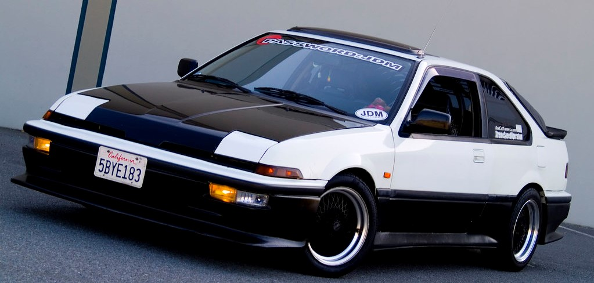
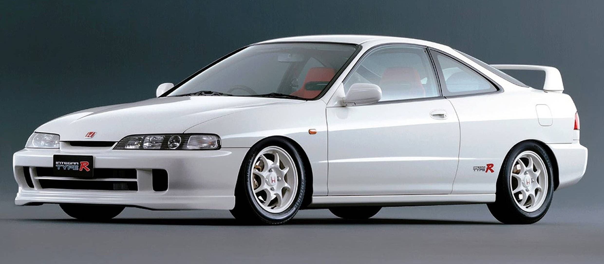
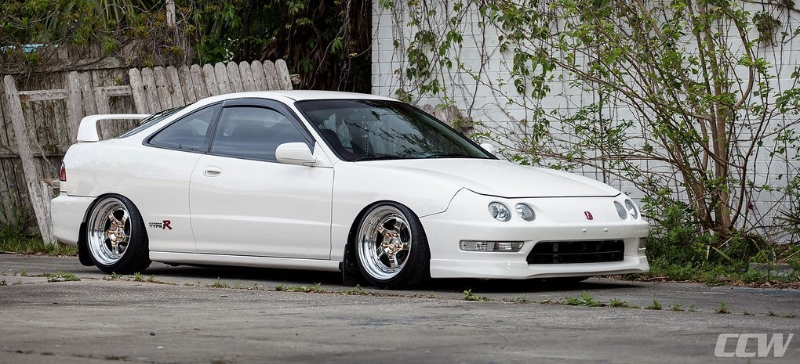

Honda Integra
Honda Integra — компактный автомобиль, выпускавшийся японской автомобильной фирмой Honda Motor Company. В США модель продавалась под маркой Acura. ебют Honda Integra состоялся в 1985 году. Автомобиль был представлен с кузовами седан, хетчбек и купе. Двигатель — 1,6-литровый, мощностью 113–118 л. с., коробки передач — пятиступенчатая «механика» или четырёхступенчатый «автомат». Honda Integra второго поколения увидела свет в 1989 году и выпускалась до 1993 года. Именно на автомобиле этого поколения был впервые установлен знаменитый двигатель B16A с системой VTEC - первый в мире серийный атмосферный автомобильный двигатель с удельной мощностью 100 л. с. на один литр рабочего объёма
Первое поколение
Второе поколение
Третье поколение
